Plainsman Clays
A clay mining and processing company in Southern Alberta since 1965.
Key phrases linking here: plainsman - Learn more
Details
A small clay mining and processing company located in Medicine Hat, Alberta, Canada. Plainsman makes dry and pugged clay bodies for potters, hobbyists and schools in the West. It is the only company in North America (among about 45) that mines its own clay to make a significant portion of its products. Plainsman also produces powdered clays that are used by other pottery clay manufacturers and special-purpose clays that are used across North America in a range of industries (e.g. manufacturing, smelting, health products, construction, refractories). Plainsman is also a large importer of American clays, feldspars, silica, etc to make prepared whiteware and porcelain bodies.
Plainsman’s existence is due to the convergence of several factors. It was started in a city with a ceramic manufacturing legacy since 1900, natural gas resources and a dry climate conducive to ceramic manufacture. At the time, brick, tile, sanitaryware, stoneware, tableware, porcelain insulators and glass products were all being produced. This made available factory space and the mining and machinery expertise that was needed. And it had the stories of the capable people who started each of the companies. The city also had a tradition of the “craft of ceramics”. Thus, when Luke Lindoe, a combination artist, sculptor, potter, teacher, geologist, lab technician and dreamer, came to the city in the 1960s, magic happened when he discovered the quality of the sedimentary clay deposits in the area. He was joined by John Porter, a British-trained technician and potter with a flair for business. They set up shop and quickly developed a dealer network across Canada and the Pacific Northwest of the US. They became my personal tutors.
Over the years, Plainsman has maintained focus on supplying clay for pottery (resisting pressure to develop other markets that would distract from that). The vast majority of its products are sold wholesale through a dealer and store network. It has developed a solid product line and has large warehousing so that dealers can order at any time and expect quick delivery. Plainsman also buys a wide range of materials, supplies, equipment and tools from around the world, both for resale and incorporation into its products. Recent years have seen much growth in pottery as a hobby and cottage industry; Plainsman now has as many as 10,000 customers using its products.
Plainsman Clays has also taken a leading role in providing online resources to assist its customers (and potters and manufacturers around the world) to have all the practical and technical guidance needed to make any type of product or to solve any problem.
Related Information
Front view of the Plainsman Clays plant
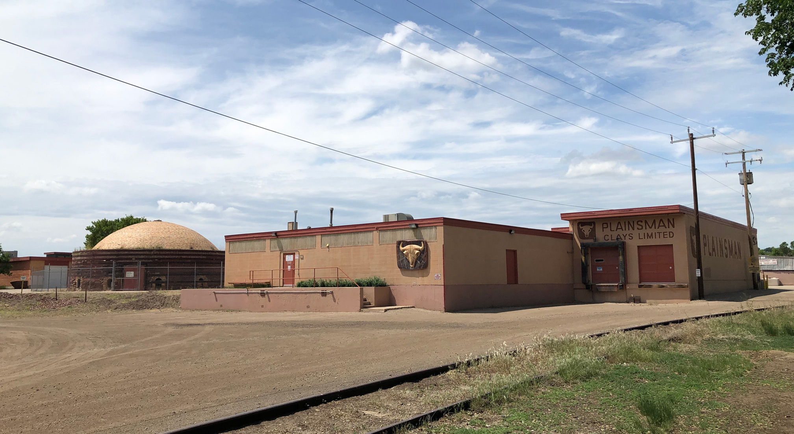
This picture has its own page with more detail, click here to see it.
Situated next to a beautiful park. On the left is the office, studio/lab, retail sales and order packing areas. On the right is the entrance to shipping area #1 (used for small-order shipping and miscellaneous receipts. Behind (not visible) is the factory and stockpile storage, driers and mixing areas. The domed beehive kiln on the left is the last of more than twenty. Plainsman is built on the site of the former Alberta Clay Products complex, a clay pipe manufacturer during the early and middle 1900s. The plant is literally sitting on top of broken-shard-rejects of decades of pipe and tile manufacturing. To the left of this picture is our main warehouse and shipping area #2 (for full semi-trailer load shipments and receipt of full loads of minerals and equipment).
What we see in the park beside the Plainsman plant
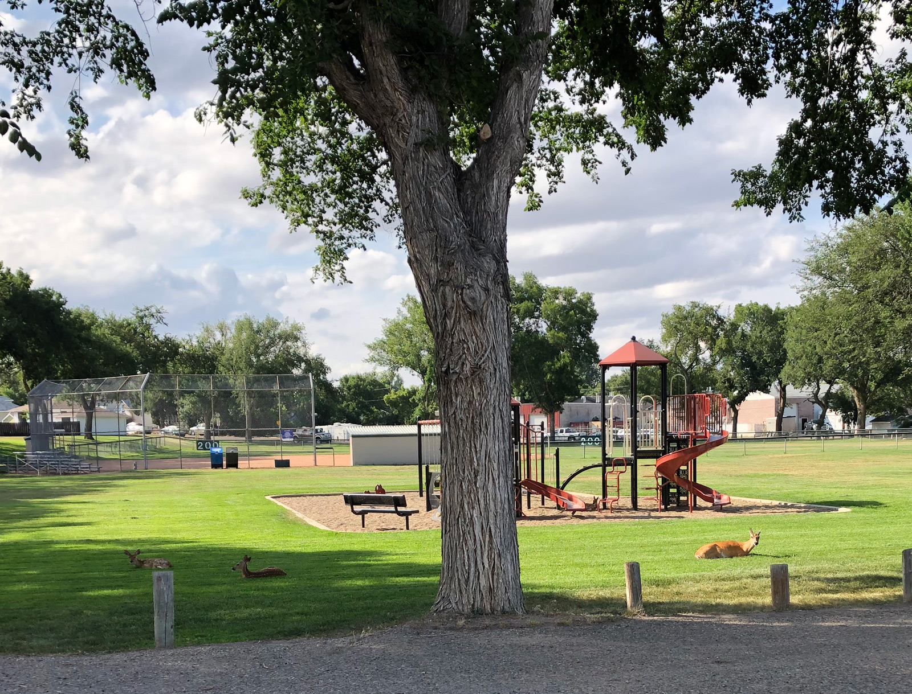
This picture has its own page with more detail, click here to see it.
The Plainsman Clays factory is right beside a baseball park. A beautiful place in the summer where children play and teams compete. But in the afternoon and evenings the deer move in. And mow the grass! The deer stay around all winter, in this residential area they are away from the coyotes and occasional mountain lion in the nearby river valleys.
Salt glaze beehive kiln beside the Plainsman Clays plant
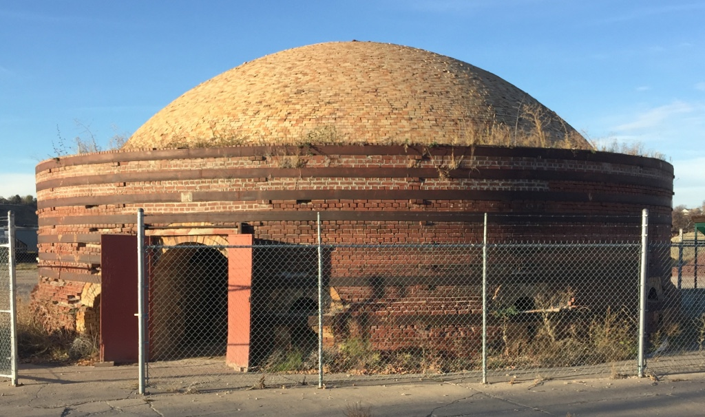
This picture has its own page with more detail, click here to see it.
This was built just after the turn of the 20th century and was one of about 20 at the Alberta Clay Products company. It was used to fire salt-glazed ceramic pipe, these were used for municipal sewer and water lines. A ceramic industry quickly grew in the city because it had good clay, natural gas, plenty of water, a dry climate, industrious people, a large river and it was on the Trans Canada highway and railway.
Plainsman M2 being delivered at the plant site in 2015
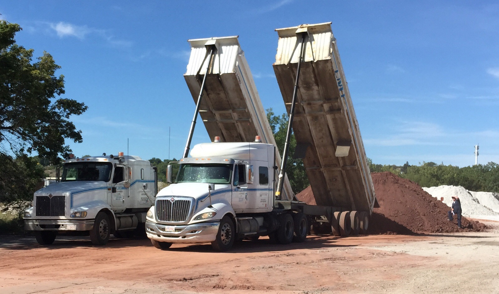
This picture has its own page with more detail, click here to see it.
M2 is a dark red burning, middle temperature, moderate plasticity, low contaminant stoneware clay. It makes a great base for brown firing low and medium temperature clay bodies, less than 50% is needed for good body color. Plainsman Clays has been surface-mining it in Montana and importing it to Alberta since 1980.
"Whitemud" clays in dinosaur country of southern Saskatchewan.
These are Cretaceous. Jurassic? 1km straight down.
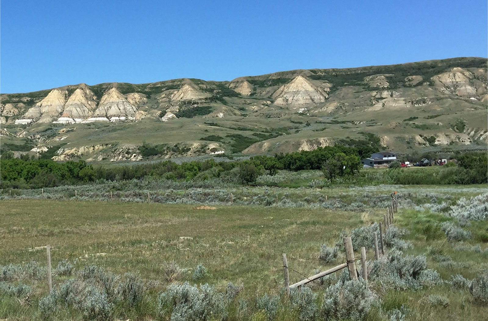
This picture has its own page with more detail, click here to see it.
This is a "badlands" slope in the Frenchman river valley. The valley exposes the "Whitemud Formation" in many places (clearly visible here part way down on the left). Two surface mines of Plainsman Clays are nearby, in a place where lower-lying rolling hills leave much less over-burden to remove. These materials were laid down as marine sediments during the Cretaceous period. The skeleton of the world's largest T.Rex, dubbed "Scotty", was found 50km east of here (in the layers just above the Whitemuds). Where are the layers of Scotty's ancestors from the Jurassic period? Straight down 1 kilometer! And another kilometer to bedrock!
Mel Noble at Plainsman Clay's Ravenscrag, Saskatchewan quarry
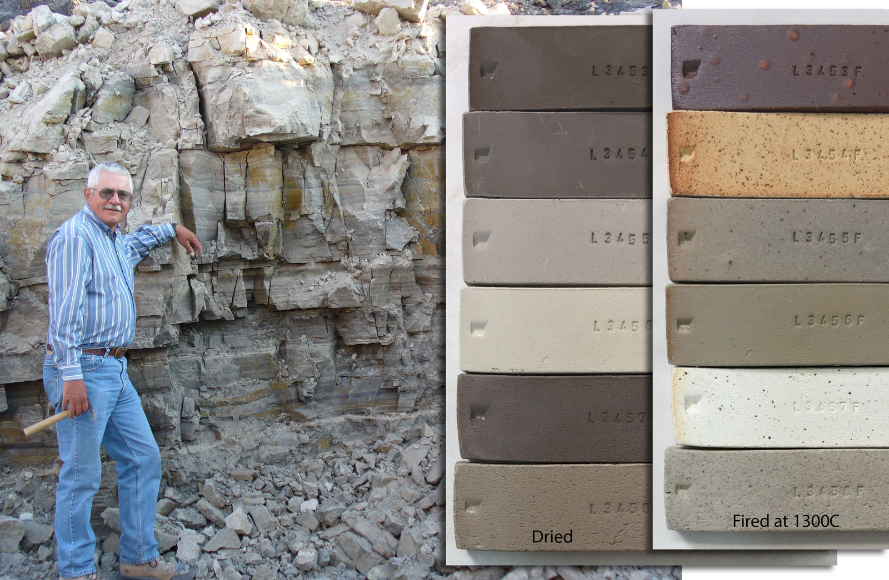
This picture has its own page with more detail, click here to see it.
Six different sedimentary clays are extracted from this quarry. It was opened in the 1970s, the best location available at the time. These test bars were made by slaking select lumps from each layer (thus exhibiting their best performance). The left-most dried test bars show the layers (top to bottom). The A1 top layer is the most plastic and has the most iron contamination (it is used in the most speckled reduction firing bodies). A2, the second one down, is a ball clay (similar to commercial products, although darker burning), it is very refractory and the base for Plainsman Fireclay. A3, third from top, is a complete buff high-temperature stoneware (like H550), although sandy and over-mature at cone 10. 3B, third from bottom, is a smooth medium-temperature stoneware; it contains significant natural feldspar (although fired color and particulate contamination are the most variable). The second from the bottom, 3C. fires the whitest and is the most refractory (it is the base for H441G). The bottom one, 3D, the best product in the quarry. Although the least plastic and most silty, it is also very fine particled and the cleanest (consistently free of particulate impurities and sand), it pairs very well with a ball clay to make a cone 6 stoneware.
Plainsman Ravenscrag, Saskatchewan quarry 2018
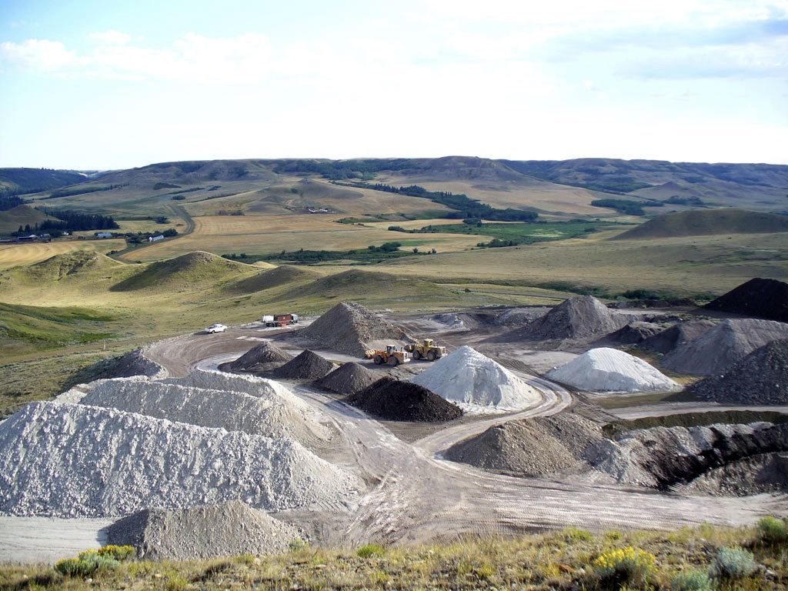
This picture has its own page with more detail, click here to see it.
Situated in the majestic Eastend river valley. The river has cut this valley over millions of years from the flat tableland 100 meters above, revealing all the layers of clay. These sediments were formed by the Western Interior Seaway. Today's river divides into two just west of here, leaving and strip of hills along the valley bottom. The hill being mined has minimal overburden to remove to uncover the layers of the “Whitemug Formation”. The reserves here are vast, the company has been mining just this one hill for 40 years, removing about 100,000 tons. Yet these layers stretch across the province and into Alberta. They are hidden from view except where valleys like this expose them.
These Saskatchewan grasslands lie almost right on top of pure clay!
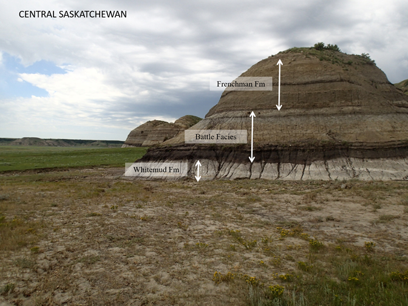
This picture has its own page with more detail, click here to see it.
These amazing hills near Big Muddy, Saskatchewan expose the sedimentary layers of the Whitemud formation (and others). The light-colored layer at the bottom is what Plainsman Clays calls A3, it makes up about half of M340. But below ground is the 3B layer, the other half. The dark grey layers above the Whitemuds are what we call A2, a ball clay. Top soil has accumulated on much of the clay to be able to grow the grass but there are bare spots around these hills. Although this is about 250km east of the Plainsman quarry at Eastend, Saskatchewan - the clay layers are remarkably similar. The clay resources in the area are truly astounding, not just in the quantity and quality but also in the magnificent landscape they define.
Mining the Battle Formation at Ravenscrag, Saskatchewan - June 2018
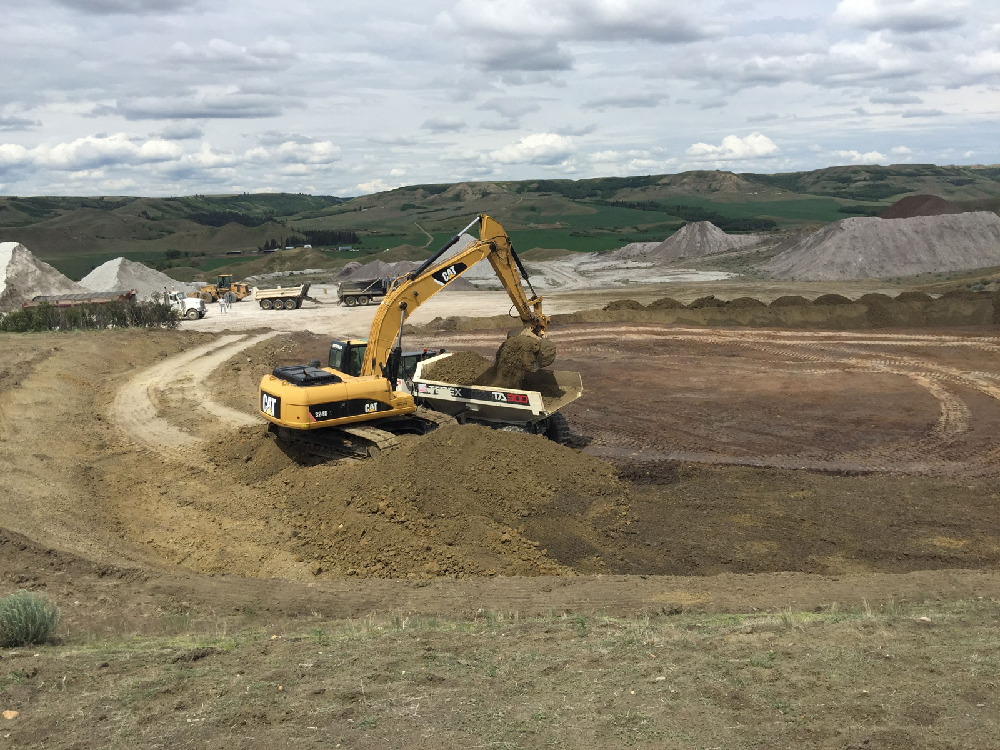
This picture has its own page with more detail, click here to see it.
This is the top layer. Battle clay is highly bentonitic, it is the "super hero of plasticity" in the quarry, it is unbelievably sticky. We have considered it "over-burden" in the past, but now I will be looking for ways to employ Battle clay in products and seeking special-purpose markets for it. Only 10% of this can turn a silt into a plastic throwing body! It is also high in fluxes (melts by cone 6). That means it can be used to improve the fired maturity of bodies, reducing the need for talc. Removal of this layer has exposed the top of the White-Mud Formation, the "A1" layer. A1 is employed in high fire bodies to impart brown color and fired speckle.
Deairing mixer pugmill at Plainsman Clays
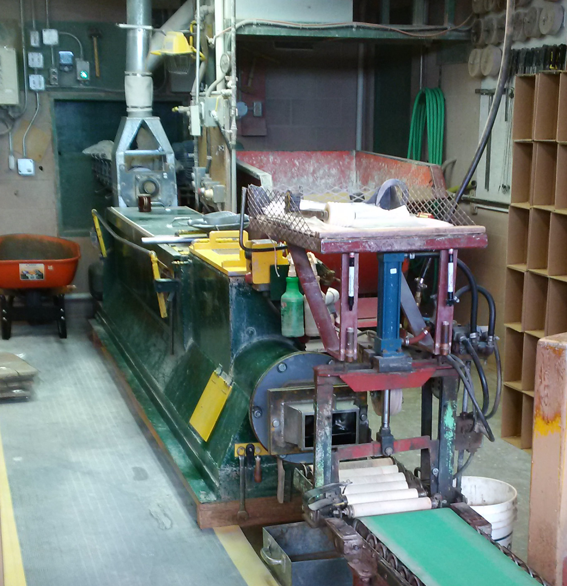
This picture has its own page with more detail, click here to see it.
The pugmill has been reassembled after cleaning and is ready for startup. This machine is powerful and capable of injecting a lot of energy into the material, enough that a premixer is not needed for typical body types. Clay powder and water are fed into the main mixing chamber by a screw conveyor at the far end. Dozens of blades on the rotating shaft inside cut and mix the material with the water so that by the time it has reached halfway all traces of powder are gone. At the end of the main chamber an auger delivers the soft clay to a narrowing venturi terminated by a shredder. This compresses and slices the material with dozens of tiny blades as it enters the vacuum chamber (yellow cover). This chamber, into which the main shaft extends, contains many more blades that further mix and expose as much surface as possible for de-airing. The material proceeds to a final auger that further compresses the clay and delivers it to the nose where a column is extruded for cutting to length and packaging. This combination premixing and pugging in the same machine enables a continuous process from raw lumps to powderizing to final pugged product.
Pugmill cleanup in preparation for making a porcelain
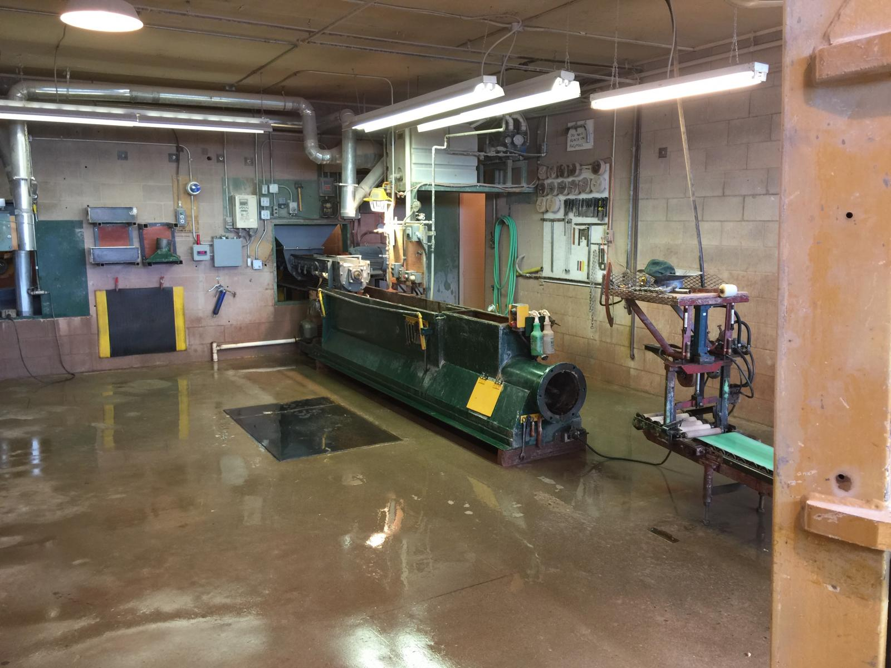
This picture has its own page with more detail, click here to see it.
The machine is being cleaned in preparation for a porcelain run (after producing stoneware clays). The pugmill has been stripped down completely - all parts in the main chamber, vacuum chamber and in the nose). The casings, augers and other components are washed, dried and inspected. Clean-downs and associated maintenance like this are costly but necessary to ensure quality porcelain. Each time we do this we are reminded how amazing this machine is - it can premix, pug and de-air even the most difficult of all clay bodies, Polar Ice. That body can be thrown straight out of the machine as plastic as it would be if aged for a year. This machine routinely produces 600+ boxes per day, turning powder into pugged in a continuous operation.
Think the idea of mixing your own glazes is dead? Nope!

This picture has its own page with more detail, click here to see it.
These are two pallets (of three) that went on a semi-trailer load to a Plainsman Clays store in Edmonton this week. They are packed with hundreds of bags of powders used to mix glazes. More and more orders for raw ceramic materials are coming in all the time. Maybe you are using lots of bottled glazes but for a cover or a liner glaze it is better to mix your own. And cheaper! And there are lots of recipes and premixed powders here to do it. One of the big advantages is that when you dip ware into a properly mixed slurry it goes on perfectly even, does not run and dries on the bisque in seconds. No bottled glaze can do that.
Ever wondered why your dealer can quickly get the clay you need?
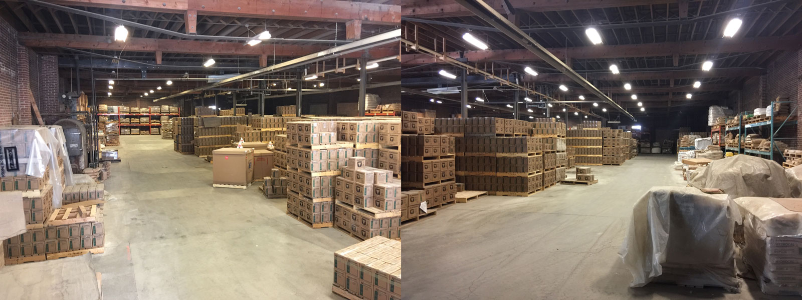
This picture has its own page with more detail, click here to see it.
This is our warehouse. It is really big! There are 20,000+ boxes in stock of almost every kind of clay we make (about fifty). Plus a hundred different ceramic material powders, many of which we buy in truckload quantities. We keep all kinds of equipment and supplies in stock also (in other storage areas), having a total value exceeding that of the clay. This means that when your dealer orders a truckload of clay, materials, supplies, tools and equipment from us, they get it fast.
200 Shimpo wheels in stock at Plainsman. Certified and ready.
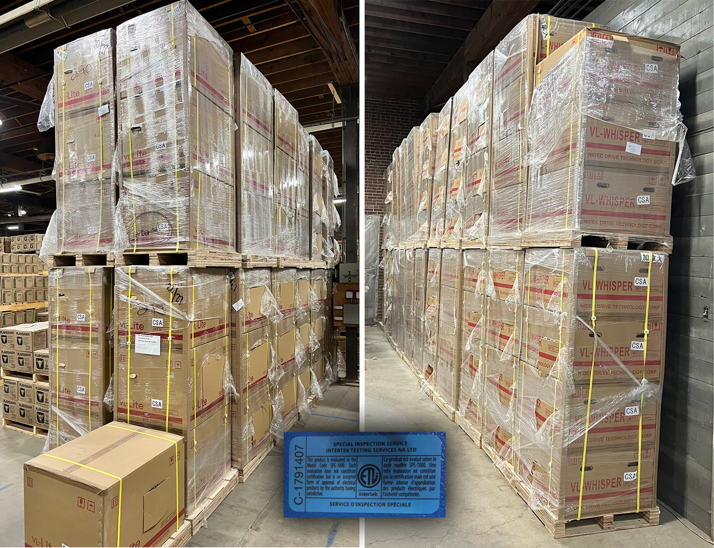
This picture has its own page with more detail, click here to see it.
This is our most recent shipment from Nidec-Shimpo of Japan. Although a large company, making drive mechanisms for many types of heavy equipment, they apply their technology to potter's wheels as a matter of pride in a country that reveres pottery in its culture. We have opened every box to reveal the serial number. A certified inspector checked each and affixed sticker to ensure they meet CSA Code SPE-1000 for electrical safety. This approval enables the sale of the equipment to public institutions. And it assures you that the equipment meets CSA electrical standards and is safe and insurable for use at home. Wheels like these can last a lifetime. These will only last a few months and will receive another shipment.
The powder blender for making porcelain bodies at Plainsman Clays
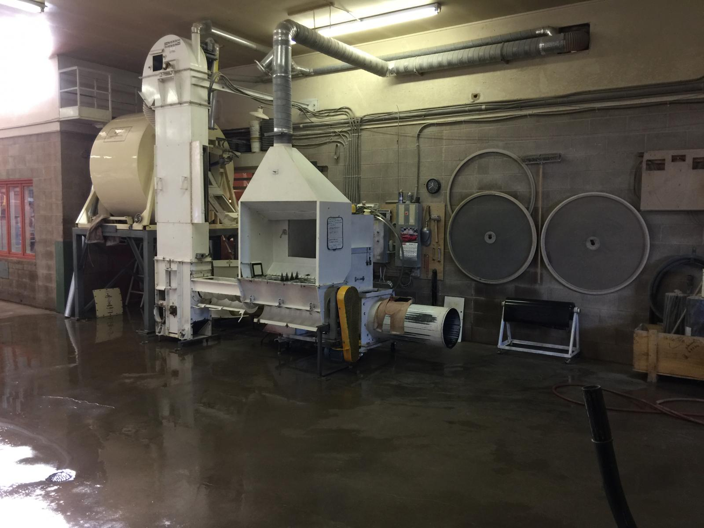
This picture has its own page with more detail, click here to see it.
All of the equipment has been washed in preparation for a porcelain run. Original container bags are broken in the dust-hood unit on the right and augered and elevated into the rotating blender/mixer. It feeds a vibrating screen (not visible) that removes paper and other contaminants. For wet clay bodies the screen feeds hoppers on the other side of the wall, they in turn feed the pugmill. For dry bodies and glazes the powder goes to one of the hoppers and that feeds a bagging unit. This type of equipment can handle 1200 lb batches (doing one every five minutes for some products, longer for others).
Plainsman Warehouse 1 getting a new roof
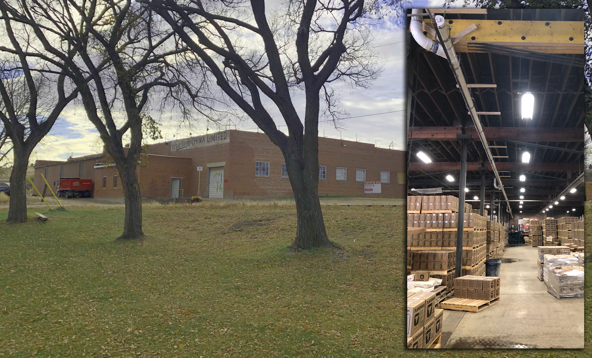
This picture has its own page with more detail, click here to see it.
Our main warehouse is actually a historic building in our city. It was part of the former Medicine Hat Potteries (1938-55) and then Hycroft China till 1989. We depend heavily on it to be able to maintain a large stock of bodies and materials. It needs a new roof, that is a big job on a building this size. The roof has multiple drain sites that feed to large pipe suspended inside, today was the day to test the new system.
Luke Lindoe in 1971
This picture has its own page with more detail, click here to see it.
He was the founder of Plainsman Clays. My dad had just built the Plainsman Clays factory for him and I began working there in 1972 (this picture was taken at his house, which my father also built). He was a well-known artist potter and sculptor at the time, having come out of the pottery production industry in the area. He got me started along the fascinating road of understanding the physics of clays. He was a true "plains man", interested in the geology of the plains (notice the skulls, these inspired the Plainsman logo). He got me started doing physical testing of raw clays (that he was finding everywhere). I was blown away by the fact that I could assess a completely new material and judge its suitability for many types of ceramic products and processes by doing the simple physical tests he showed me. It got started writing software to log the data for that back in the 1980s, that eventually led to digitalfire.com and Insight-live.com.
Inbound Photo Links
|
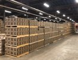 This on only 2/3 of the M340 we have in stock! |
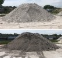 The top pile of clay can make one million coffee mugs. The bottom one can glaze ten million! |
Links
| URLs |
https://plainsmanclays.ca/index.php?menupath=18
About Plainsman Clays |
 PayPal | No tracking, No ads, No paywall, No transient content! Just organized, concise information constantly updated and improved. Was this helpful? Consider supporting me. |
| By Tony Hansen Follow me on        |  |
Got a Question?
Buy me a coffee and we can talk 

https://digitalfire.com, All Rights Reserved
Privacy Policy